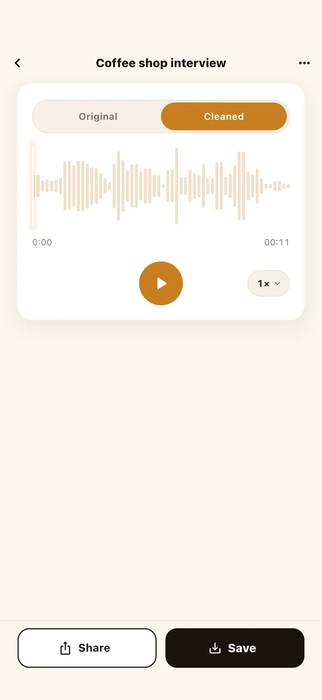
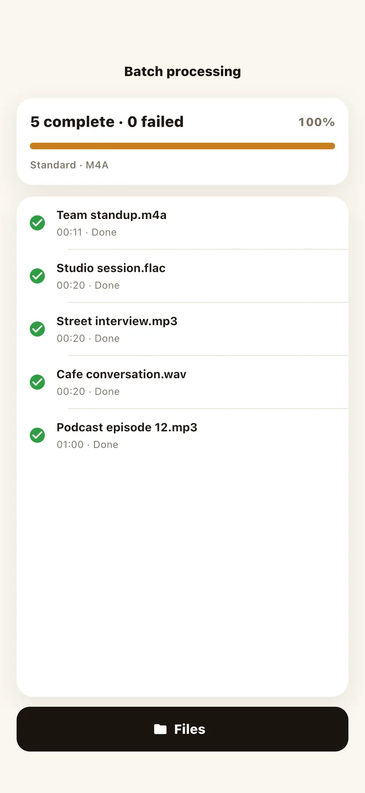

At a glance
The four things most people want to know first. Every detail, with its source, is in the full table below.
| App | No upload | No account | Works offline | Saves for free |
|---|---|---|---|---|
| NoisyNo | ✓Yes | ✓Yes | ✓Yes | ✓Yes |
| Denoise | ✓Yes | –Not stated | –Not stated | Paid |
| Denoise.FX | ✓Yes | –Not stated | ✓Yes | –Not stated |
| Audio Cleaner | ✓Yes | –Not stated | –Not stated | –Not stated |
| PureVoice | ✓Yes | –Not stated | ✓Yes | Listed as free |
| NoiseKill | ✓Yes | ✓Yes | ✓Yes | With ads |
| Offline AI Video Noise Remover | ✓Yes | ✓Yes | ✓Yes | 2 a day |
| Adobe Podcast | ✗No | ✗No | ✗No | 1 hour a day |
| LALAL.AI | ✗No | ✗No | Not on phones | Previews only |
✓ yes · ✗ no · – not stated by the vendor
The full table
The same nine apps with the details behind each answer. The first seven clean on the phone; the last two are cloud services. Prices are US App Store, Google Play or vendor prices, and where a vendor doesn't say something, the cell says not stated.
Scroll the table sideways to see every column →
Noise remover apps as described by their vendors, checked 26 November 2026. Superscript numbers link to the sources.
| App | Uploads your audio to a server? | Account required? | Price model | Platforms | What's free / export limits | Works offline? | Cleans video? |
|---|---|---|---|---|---|---|---|
| Cleaning runs on the device | |||||||
| NoisyNoGrayForge (this site) | No. Files are cleaned on the device; limited diagnostics don't include file names or audio.12 | No.13 | Free download; noise removal free at any length. Pro: one-time, no subscription: $5.99 on iPhone, iPad and Android; $7.99 on Mac, bought separately.23 | iPhone, iPad (iOS 15+), Mac (macOS 13.4+), Android234 | Cleaned audio as M4A (AAC), free, any length. Lossless WAV, cleaned video, batch, loudness normalization and trimming need Pro.12 | Yes, once installed.13 | Yes. Free saves the cleaned audio; Pro returns the clip as a video with only the sound replaced.2 |
| Denoise: AI Noise RemoverRoutes Software SRL | No. The listing says nothing is uploaded.5 | Not stated5 | Free download. 3 exports for $1.99, or Denoise Pro: $14.99 lifetime or a monthly subscription.5 | iPhone, iPad (iOS 17+), Apple-silicon Mac5 | Cleaning and listening are free. Saving or sharing needs Pro or an export pack. M4A, WAV or video.5 | Not stated; everything runs on the device.5 | Yes.5 |
| Denoise.FX for Audio & VideoAndrey Ivankin | No. Processing is on the device.6 | Not stated6 | Free download. Premium items: weekly ($3.99 or $4.99), “Early” ($29.99 or $39.99) and lifetime ($39.99 or $49.99).6 | iPhone (iOS 15+), Apple-silicon Mac6 | What's free isn't stated. Saves audio in a format you choose and videos back to Photos.6 | Yes; no internet connection needed.6 | Yes.6 |
| Audio Cleaner: AI DenoiseKnotSmith Ltd. | No. Noise removal runs locally on the iPhone.7 | Not stated7 | Free download. Premium: $3.99/week, $9.99/year or $19.99 lifetime, plus other Premium items from $2.99 to $7.99.7 | iPhone (iOS 18+), Apple-silicon Mac7 | What's free isn't stated. Exports MP3, WAV, AAC, M4A, and MP4 or MOV video.7 | Not stated; processing runs on the device.7 | Yes.7 |
| Noise Reducer, PureVoiceOWLMYST | No. The listings say audio never leaves the device.89 | Not stated89 | Free download. The listing says all features are free; the App Store also offers a $19.99 Lifetime purchase.89 | iPhone (iOS 15.6+), Apple-silicon Mac, Android89 | Unlimited processing length claimed. MP3, WAV, M4A. What Lifetime unlocks isn't stated.89 | Yes.89 | Not stated89 |
| NoiseKill: AI Noise RemoverShahLabs | No. The listing says nothing goes to a server.10 | No.10 | Free, supported by ads. No in-app purchases listed.10 | Android phones, tablets, Chromebooks, Android TV10 | Free, no watermark. Cleaned files save to the gallery.10 | Yes.10 | Yes; MP4, MOV, MKV.10 |
| Offline AI Video Noise RemoverAreeb Labs | No. The app has no internet permission.11 | No.11 | Free. Pro: one-time purchase, no subscription.11 | Android11 | Free: 2 saves a day at full length, no watermark. Pro: unlimited saves. MP4 video, M4A audio.11 | Yes.11 | Yes; the picture is copied untouched.11 |
| Cleaning runs in the cloud | |||||||
| Adobe Podcast Enhance SpeechAdobe, web app | Yes. You upload files to the web app.12 | Yes; the free plan starts with signing up.12 | Free plan. Firefly Pro plan (includes Adobe Podcast Premium): $9.99/month for the first 6 months in an offer ending 6 December.12 | Web browser12 | Free: audio only, one file at a time, up to 30 minutes and 500 MB, 1 hour a day. Paid: files up to 2 hours and 1 GB, 4 hours a day.12 | No; it runs on the web.12 | Paid plan only (MP4, MOV and more)12 |
| LALAL.AI Voice Cleanerlalal.ai | Yes. The phone apps say all processing runs on LALAL.AI's cloud servers.131415 | Yes.1314 | Free Starter (10 minutes). Lite $90/year, Pro $180/year. One-time top-ups from $50.16 | iPhone, iPad, Android, web, desktop131416 | Free plan previews only; downloading the full result needs a paid plan. Files up to 200 MB free, 2 GB paid.1316 | No on iPhone and Android.1314 | Yes on the web: MP4, MOV, MKV, AVI, M4V.15 |
Store listings change often. App Privacy labels and Data safety sections are filled in by the developers themselves; Apple notes that its labels are not verified.
How we checked
GrayForge makes NoisyNo, so weigh this page with that in mind. Every fact about another app comes from its own US App Store or Google Play listing or the vendor's website, read on 26 November 2026; nothing comes from review sites or user reviews. We didn't run the same recording through every app, so the page doesn't rank them on how clean the result sounds. Every app here is free to download or try, so you can hear the difference yourself.
NoisyNo, free and Pro
Noise removal is free at any length, with no account, and the cleaned audio is saved as M4A (AAC). Pro is a one-time purchase with no subscription: $5.99 on iPhone, iPad and Android, and $7.99 for the Mac version, which is bought separately.23



Pro adds cleaned video export, lossless 16-bit WAV, batch processing, loudness normalization to audiobook (−18 LUFS), podcast (−16 LUFS) or video and streaming (−14 LUFS) targets, and trimming before cleanup.2
What the table doesn't show
- NoisyNo takes the steady layer of noise out from under a voice (hum, hiss, fans, air conditioning, wind, room tone, traffic) and is tuned for speech, not music. Of the on-device apps here, only NoisyNo and PureVoice are on both the App Store and Google Play.12 The on-device walkthrough shows the whole flow.
- Denoise has the biggest toolkit: it also reduces room echo, evens out the volume, cleans as you record, edits, shortens long pauses, splits voice from music and sells transcription time.5
- Denoise.FX is the most-rated of the on-device iPhone apps here (4.5 stars from 435 US ratings). You can tune the algorithm by hand and add frequency filters, and its privacy label lists purchase history and a user ID as data linked to you.6
- Audio Cleaner has a strength control with a before-and-after comparison, plus EQ, effects and presets, and can take files from a computer over Wi-Fi.7
- PureVoice says no data is collected on both stores, but both listings were last updated in August 2025.89
- NoiseKill plays a short A/B preview before cleaning the whole file, with Gentle, Balanced and Strong settings. It's a small app, with 100+ downloads.10
- Offline AI Video Noise Remover lets you hold to hear the original while it plays and has a voice boost for quiet speech. It's new: the current version is its first release.11
- Adobe Podcast's paid tier comes with Adobe's Firefly Pro plan and adds video, bulk upload and a strength setting. Our Voice Memos comparison covers it alongside Kapwing.12
- LALAL.AI Voice Cleaner also removes background music, mic rumble and plosives, and has a De-Echo setting.15
Also worth a look: Auphonic, a web service for podcasters that reduces noise and reverb, free for 2 hours a month with a jingle1718; Audio Noise Remover & Reducer on iPhone, free with a “Data Not Collected” label but iOS 26 only19; and on Android, Noise Reducer: Clean Audio, which declares no permissions at all20, and NoiseFix21. On iPhone, the Voice Memos app's own Enhance Recording switch is covered in our Voice Memos Enhance vs NoisyNo page.
Which one to use when
- You want a cleaned file to keep or send, for free. NoisyNo saves cleaned M4A audio at any length without paying. On Android, NoiseKill (with ads) and Offline AI Video Noise Remover (two saves a day) are free too.
- The voice is in a video and you need the video back. NoiseKill and Offline AI Video Noise Remover save video for free on Android. On iPhone, Denoise saves video after a purchase, as does NoisyNo with Pro; Denoise.FX and Audio Cleaner save video too but don't say what's free.
- You want to edit as well as clean. Denoise records, trims, merges, shortens pauses and transcribes; Audio Cleaner adds EQ and presets.
- You use both an iPhone and an Android phone, or a Mac. NoisyNo runs on all three; PureVoice is also on both stores but hasn't been updated since August 2025.
- The recording is confidential, like a meeting, an interview or a medical appointment: any of the on-device apps keeps it off other companies' servers. Read more in cleaning a meeting recording.
- You're on a computer where you can't install apps, and the clip isn't sensitive: Adobe Podcast or LALAL.AI in the browser. Expect a sign-up, an upload and free-plan limits.
Check an offline claim yourself
Listings are written by the people selling the app, ours included. Two minutes tell you more:
- Turn on Airplane Mode with Wi-Fi off, then clean a short recording. If it finishes, the work ran on your phone.
- A sign-in screen before processing means your files are tied to an account. Read the privacy policy to see what happens to them.
- Read the privacy section (App Privacy on the App Store, Data safety on Google Play), keeping in mind that both are filled in by the developer.
Noise that never gets recorded doesn't need removing. Move away from fans and air conditioners, get the phone closer to the person speaking, and on iPhone try Voice Isolation while recording.
Frequently asked questions
Which noise remover apps work offline?
NoisyNo, Denoise.FX and PureVoice on iPhone, and NoisyNo, NoiseKill, Offline AI Video Noise Remover and PureVoice on Android, say they clean recordings without an internet connection. Denoise and Audio Cleaner say everything runs on the device but don't use the word offline. Adobe Podcast and the LALAL.AI phone apps process files on their own servers.
Is there a free noise remover app without a watermark or save limit?
NoisyNo saves cleaned audio as M4A for free at any length, with no account. On Android, NoiseKill is free with ads and no watermark, and Offline AI Video Noise Remover saves two files a day for free. Denoise charges to save, Adobe Podcast's free plan allows 1 hour of audio a day, and LALAL.AI's free plan only previews results.
Do Adobe Podcast and LALAL.AI upload my recording?
Yes. Adobe Podcast Enhance Speech works on files you upload after signing up, and LALAL.AI's iOS and Android pages say all processing runs on its cloud servers and requires an account.
Is NoisyNo free?
Yes. Noise removal is free at any length, saved as M4A, with no account. Pro is a one-time purchase, $5.99 on iPhone, iPad and Android and $7.99 for the Mac version, that adds video export, WAV, batch processing, loudness normalization and trimming.
Sources
All pages were read on 26 November 2026. Prices are the US prices shown on those pages that day.
- NoisyNo product page (GrayForge) · https://grayforge.app/noisyno/On-device processing, no account, works offline after install, formats, Pro features, no subscription, platforms. Checked 2026-11-26.
- GrayForge llms.txt, NoisyNo section · https://grayforge.app/llms.txtWhat it removes, tuned for speech not music, input and output formats, video handling with and without Pro, Pro features and one-time prices, separate Mac Pro purchase. Checked 2026-11-26.
- NoisyNo: Voice Noise Remover, App Store (US) · https://apps.apple.com/us/app/id6772728543In-app purchases (NoisyNo Pro $5.99, and $7.99 for the Mac version), iOS 15, iPadOS 15 and macOS 13.4 requirements, no uploads and no accounts. Checked 2026-11-26.
- NoisyNo: Voice Noise Remover, Google Play (US) · https://play.google.com/store/apps/details?id=com.grayforge.noisynoAndroid listing, on-device model, no cloud and no accounts. Checked 2026-11-26.
- Denoise: AI Noise Remover, App Store (US) · https://apps.apple.com/us/app/id946423200Nothing uploaded, runs on the device, free cleaning and listening, Pro or export pack to save, in-app purchase prices, M4A/WAV/video export, editing and transcription features, compatibility. Checked 2026-11-26.
- Denoise.FX for Audio & Video, App Store (US) · https://apps.apple.com/us/app/id1623119654On-device processing with no internet connection needed, in-app purchase prices, video support, version 3.0 modes, compatibility, ratings, App Privacy label. Checked 2026-11-26.
- Audio Cleaner: AI Denoise, App Store (US) · https://apps.apple.com/us/app/id6751505212Noise removal runs locally, in-app purchase prices, export formats, video support, EQ and presets, iOS 18 requirement. Checked 2026-11-26.
- Noise Reducer, PureVoice, App Store (US) · https://apps.apple.com/us/app/id6748527663Offline, no uploads, Lifetime $19.99, “all features free” wording, MP3/WAV/M4A, compatibility, Data Not Collected label, last update August 2025. Checked 2026-11-26.
- Noise Reducer, PureVoice, Google Play (US) · https://play.google.com/store/apps/details?id=com.owlmyst.ai.purvoiceOffline, no uploads, in-app purchases, no data collected, updated 27 August 2025. Checked 2026-11-26.
- NoiseKill: AI Noise Remover, Google Play (US) · https://play.google.com/store/apps/details?id=com.mcore.noisekillOn-device, no internet needed, no account, no watermark, contains ads, video and audio formats, supported devices, Data safety section. Checked 2026-11-26.
- Offline AI Video Noise Remover, Google Play (US) · https://play.google.com/store/apps/details?id=com.areeblabs.noiseremoverNo internet permission, no sign-up, free (2 saves a day) and one-time Pro, MP4 and M4A output, first release. Checked 2026-11-26.
- Adobe Podcast plans · https://podcast.adobe.com/en/plansEnhance Speech free plan and Firefly Pro plan limits, sign-up, upload one file at a time, video on the paid plan, $9.99/month offer for the first 6 months ending 6 December. Checked 2026-11-26.
- LALAL.AI for iOS · https://www.lalal.ai/ios-app/Processing runs on LALAL.AI's cloud servers, internet and account required, free plan previews only, iPhone and iPad. Checked 2026-11-26.
- LALAL.AI for Android · https://www.lalal.ai/android-app/Processing runs on LALAL.AI's cloud servers, internet and account required, noise and background music removal. Checked 2026-11-26.
- LALAL.AI Voice Cleaner · https://www.lalal.ai/voice-cleaner/Online service, upload required, what it removes, De-Echo setting, video formats. Checked 2026-11-26.
- LALAL.AI pricing · https://www.lalal.ai/pricing/Starter, Lite and Pro plans, upload size limits, one-time top-ups. Checked 2026-11-26.
- Auphonic pricing · https://auphonic.com/pricingFree 2 hours a month with a jingle, recurring credits from $11 a month billed yearly, one-time credits from $12 for 5 hours, noise and reverb reduction on every plan. Checked 2026-11-26.
- Auphonic help, Production · https://auphonic.com/help/web/production.htmlUpload in the browser, by link or from external services; audio files stored only for a limited number of days; denoising and reverb settings. Checked 2026-11-26.
- Audio Noise Remover & Reducer, App Store (US) · https://apps.apple.com/us/app/id6782887119Free, no account, no network access, video and audio, Data Not Collected label, iOS 26 requirement. Checked 2026-11-26.
- Noise Reducer: Clean Audio, Google Play (US) · https://play.google.com/store/apps/details?id=noise.reducerBundled model, no account, no permissions, no ads, WAV output, steady noise only, no batch. Checked 2026-11-26.
- NoiseFix: offline AI Denoiser, Google Play (US) · https://play.google.com/store/apps/details?id=io.cyberfly.noisefixOffline, no account, one-time purchase option, built for voice not music, no data collected. Checked 2026-11-26.
NoisyNo — Voice Noise Remover
Removes hum, hiss, fan noise, wind and room tone from voice recordings and video audio, on your device. No upload, no account, and noise removal is free at any length.
Tell us and we'll fix the table.
Listings change. If a price, platform or limit above is out of date, including one about NoisyNo, send a note with the link and the table will be corrected.
grayforge.dev@gmail.com